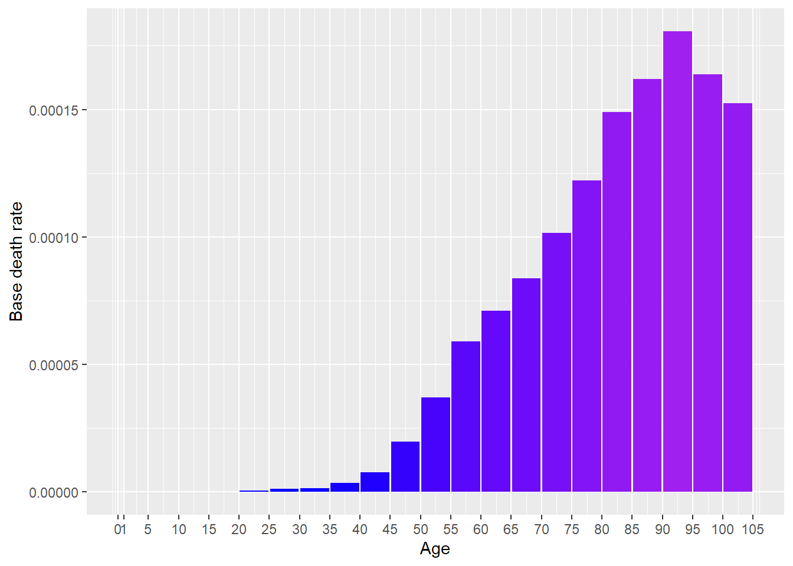
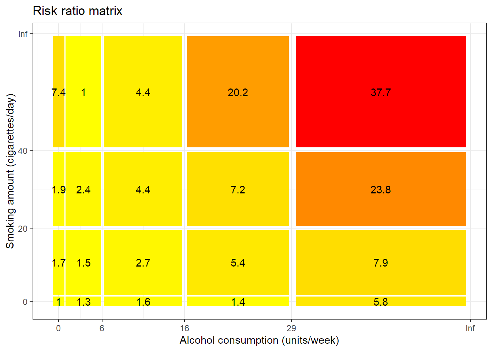
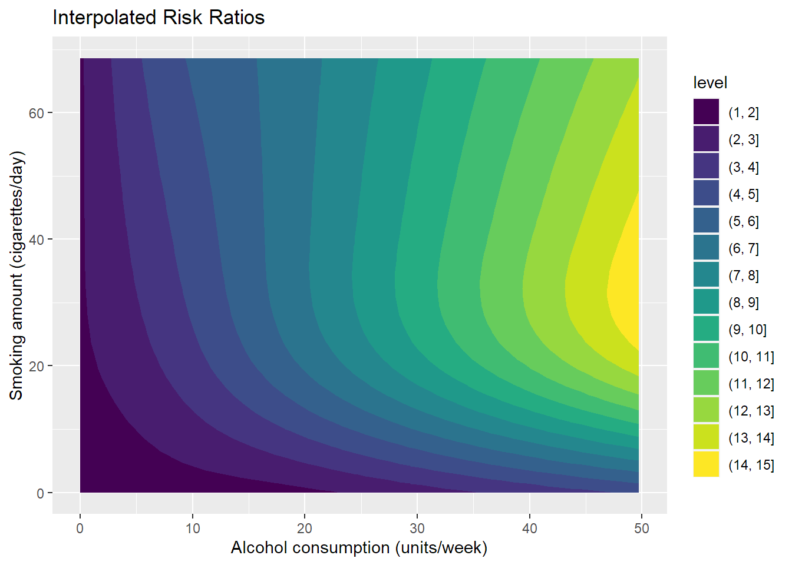

[auto-generated file]
Mouth cancer is a death cause. It means that there is a certain probability that one dies from this.
Alternative names:
- Mouth ca.
- Mouth cancer
- MouthCancer
Categories
Mouth cancer is part of the following death cause categories
Risk factors
In the model Mouth cancer has the following risk factors
Number of deaths
In 2014 Mouth cancer was responsible for 0.358% of the deaths in the US. Below is a plot of how prevalent the death was for different ages (Xu et al. 2016)

Definition
The definition of dying from Mouth cancer is to get any of the following ICD codes as the main cause of death on one’s death certificate. The percentage is the proportion of the deaths from Mouth cancer who falls under the ICD code
C0 (62.0%)
- C00: Malignant neoplasm of lip (0.84%)
- C000: Malignant neoplasm of external upper lip (0.021%)
- C001: Malignant neoplasm of external lower lip (0.053%)
- C005: Malignant neoplasm of lip, unspecified, inner aspect (0.011%)
- C009: Malignant neoplasm of lip, unspecified (0.75%)
- C01: Malignant neoplasm of base of tongue (1.7%)
- C02: Malignant neoplasm of other and unspecified parts of tongue (24.0%)
- C020: Malignant neoplasm of dorsal surface of tongue (0.021%)
- C021: Malignant neoplasm of border of tongue (0.011%)
- C022: Malignant neoplasm of ventral surface of tongue (0.011%)
- C024: Malignant neoplasm of lingual tonsil (0.053%)
- C029: Malignant neoplasm of tongue, unspecified (24.0%)
- C03: Malignant neoplasm of gum (0.46%)
- C030: Malignant neoplasm of upper gum (0.16%)
- C031: Malignant neoplasm of lower gum (0.085%)
- C039: Malignant neoplasm of gum, unspecified (0.21%)
- C04: Malignant neoplasm of floor of mouth (0.89%)
- C049: Malignant neoplasm of floor of mouth, unspecified (0.89%)
- C05: Malignant neoplasm of palate (1.8%)
- C050: Malignant neoplasm of hard palate (0.41%)
- C051: Malignant neoplasm of soft palate (0.47%)
- C052: Malignant neoplasm of uvula (0.064%)
- C058: Malignant neoplasm of overlapping sites of palate (0.011%)
- C059: Malignant neoplasm of palate, unspecified (0.89%)
- C06: Malignant neoplasm of other and unspecified parts of mouth (12.0%)
- C060: Malignant neoplasm of cheek mucosa (0.42%)
- C062: Malignant neoplasm of retromolar area (0.21%)
- C069: Malignant neoplasm of mouth, unspecified (12.0%)
- C07: Malignant neoplasm of parotid gland (7.2%)
- C08: Malignant neoplasm of other and unspecified major salivary glands (2.9%)
- C080: Malignant neoplasm of submandibular gland (0.4%)
- C089: Malignant neoplasm of major salivary gland, unspecified (2.5%)
- C09: Malignant neoplasm of tonsil (9.8%)
- C090: Malignant neoplasm of tonsillar fossa (0.21%)
- C091: Malignant neoplasm of tonsillar pillar (anterior) (posterior) (0.053%)
- C099: Malignant neoplasm of tonsil, unspecified (9.5%)
C10: Malignant neoplasm of oropharynx (11.0%)
- C100: Malignant neoplasm of vallecula (0.085%)
- C104: Malignant neoplasm of branchial cleft (0.011%)
- C108: Malignant neoplasm of overlapping sites of oropharynx (0.011%)
- C109: Malignant neoplasm of oropharynx, unspecified (11.0%)
C11: Malignant neoplasm of nasopharynx (7.1%)
- C111: Malignant neoplasm of posterior wall of nasopharynx (0.17%)
- C112: Malignant neoplasm of lateral wall of nasopharynx (0.021%)
- C119: Malignant neoplasm of nasopharynx, unspecified (7.0%)
- C12: Malignant neoplasm of pyriform sinus (0.72%)
C13: Malignant neoplasm of hypopharynx (2.9%)
- C130: Malignant neoplasm of postcricoid region (0.011%)
- C131: Malignant neoplasm of aryepiglottic fold, hypopharyngeal aspect (0.021%)
- C139: Malignant neoplasm of hypopharynx, unspecified (2.8%)
C14: Malignant neoplasm of other and ill-defined sites in the lip, oral cavity and pharynx (17.0%)
- C140: Malignant neoplasm of pharynx, unspecified (17.0%)
Source: Xu et al. (2016), (“ICD Order Files 2014,” n.d.)
Interaction
The combined risk ratio of all risk factors is computed using the formula
\[
RR=RR_{\text{Alcohol,Cigarettes}}
\]
The normalization factor is based on the joint distribution of all the risk factors and is computed using the formula
\[
P=P_{\text{Cigarettes,Alcohol}}
\]
Alcohol consumption, Current smoking amount
Alcohol consumption and Current smoking amount are a group of risk factors for Mouth cancer.
Below is a plot of the risk ratios we have taken from the literature alterated to fit our model

Because the variables Alcohol consumption and Current smoking amount are numeric, we have computed a smoothed approximation. 
References
Xu, Jiaquan, Kenneth D Kochanek, Sherry L Murphy, and Betzaida Tejada-Vera. 2016. “Deaths: Final Data for 2014.” National Vital Statistics Reports 65 (4).